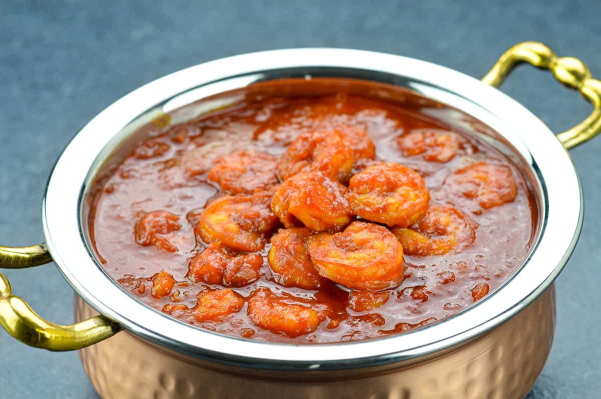

Prawn Masala

INGREDIENTS:
- Prawns 500 gms
- Mustard Seeds 1 tsp
- Onion-large chopped finely 1 nos
- Green Chili-chopped 3 nos
- Curry Laves 2 sprig
- Chili Powder 1/2 tsp
- Coriander Powder 1 tsp
- cumin powder 1/2 tsp
- turmeric powder 1/2 tsp
- Tomato-large chopped finely 1 ml
- Garam Masala Powder 1 tsp
- Salt-as per your taste 1 tbsp
- Oil 2 tbsp
- Water 1/2 cups
- For Marination: Ginger Garlic Paste 1 tsp
- Chilli powder 1 tbsp
- cumin powder 1 tsp
- Coriander powder 1 tsp
- turmeric powder 1 tsp
- Garam Masala Powder 1 tsp
- Lemon juice 1 tbsp
- Curd 2 tbsp
- Salt -or as per taste 1/2 tsp
Method:
- Take cleaned prawns in a bowl and add all the marination ingredients in it and mix well. Let it marinate for atleast 1 hour. The more marination the better.
- Heat oil in a pan.
- Add the mustard seeds and let it crackle.
- Add the onions, green chillies and the half of the curry leaves and saute till onion becomes translucent.
- Add the masalas except the garam masala powder. Mix well and saute for a min.
- Add the tomatoes and fry till it turns mushy.
- Add the marinated prawns, cover the pan and cook in low-medium flame till the water evaporates completely.
- Add 1/2 cup of water, garam masala powder, remaining curry leaves, mix well and cook on high flame 5-10 mins and take off the flame.